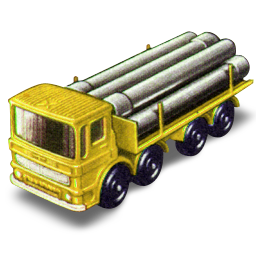

Металлопрокат

Перевозки
(351) 211-13-99
(351) 211-13-88
Металлопрокат
Перевозки
Мы начинали как компания торгующая нержавеющим и цветным прокатом, но работа по расширению ассортимента поставляемой продукции проводится постоянно. С 2000 г. была введена программа по реализации калиброванного металлопроката. Следующим крупным шагом было открытие крытого складского комплекса площадью 8000м2, что позволило не только решить задачи по хранению, первичной переработке металла, но и реализовать проект по поставкам черного листового проката из углеродистой и низколегированных марок сталей. Одновременно с этим было введено в эксплуатацию оборудование по порезке металла
В настоящее время планируются и реализуются программы по расширению сортамента поставляемой продукции, а также увеличения складских площадей. В самой ближайшей перспективе будут осуществляться поставки холоднокатаного листа и металлопроката строительного сортамента. Мы стремимся к наиболее полному удовлетворению потребностей наших клиентов, как в ассортименте, так и в услугах.